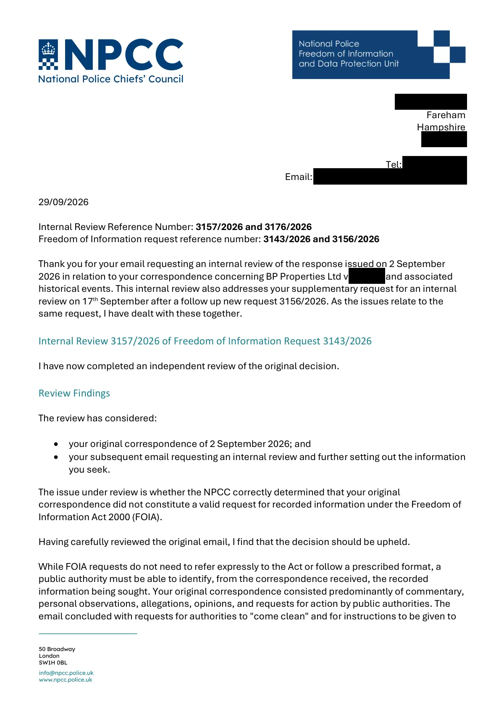

GHF-E106-R71-A1 WhatDoTheyKnow reply
NPCC internal reviews 3157/2026 and 3176/2026

Transcript
[address redacted] Fareham Hampshire [address redacted] Tel: [phone redacted] Email: [email redacted] 29/09/2026 Internal Review Reference Number: 3157/2026 and 3176/2026 Freedom of Information request reference number: 3143/2026 and 3156/2026 Thank you for your email requesting an internal review of the response issued on 2 September 2026 in relation to your correspondence concerning BP Properties Ltd v Buckler and associated historical events. This internal review also addresses your supplementary request for an internal review on 17th September after a follow up new request 3156/2026. As the issues relate to the same request, I have dealt with these together. Internal Review 3157/2026 of Freedom of Information Request 3143/2026 I have now completed an independent review of the original decision. Review Findings The review has considered: • your original correspondence of 2 September 2026; and • your subsequent email requesting an internal review and further setting out the information you seek. The issue under review is whether the NPCC correctly determined that your original
Read more
correspondence did not constitute a valid request for recorded information under the Freedom of Information Act 2000 (FOIA). Having carefully reviewed the original email, I find that the decision should be upheld. While FOIA requests do not need to refer expressly to the Act or follow a prescribed format, a public authority must be able to identify, from the correspondence received, the recorded information being sought. Your original correspondence consisted predominantly of commentary, personal observations, allegations, opinions, and requests for action by public authorities. The email concluded with requests for authorities to "come clean" and for instructions to be given to various bodies, rather than requests framed as seeking recorded information held by a public authority. Although your original correspondence referred to a range of historical events and organisations, it did not clearly specify any recorded information sought from the NPCC, NaCTSO or any other body. In those circumstances, it was reasonable for the original decision maker to conclude that no identifiable request for recorded information had been made and that the correspondence could not be processed under FOIA. Subsequent Correspondence Your internal review request contains a substantially revised and detailed set of questions seeking specific categories of recorded information relating to: 1. the 1988 operation at Great House Farm; 2. BP Properties Ltd v Buckler [1987] EWCA Civ 2; 3. police and security involvement; 4. predecessor and successor records; 5. record searches and retention arrangements; and related matters. These requests were not articulated in the original correspondence to the degree necessary for the NPCC to identify them as requests for recorded information. Rather than clarifying an existing FOIA request, your later email introduces a number of new and significantly more specific requests for information. This was acknowledged on 7 September reference 3156/2026 and a response issued 17 September. An internal review considers the appropriateness of the original decision based on the correspondence available to the decision maker at the time. On that basis, I am satisfied that the original conclusion was reasonable and in accordance with FOIA. Therefore, the internal review upholds the original decision. Internal Review 3176/2026 of Freedom of Information Request 3156/2026 I have also considered your request for an internal review of the response issued on 16 September 2026 under reference 3156 2026 NPCC Response Letter - BP vs Buckler. Your review request raises concerns regarding the scope of searches undertaken, the search methodology applied, the handling of historical and predecessor records, and the advice and assistance provided under section 16 of the Freedom of Information Act 2000. The purpose of an internal review is to assess whether the original response complied with the requirements of the Act based on the request received and the information held by the authority at the time of the request. Having reviewed the handling of request 3156/2026, I am satisfied that the original decision should be upheld. The review has confirmed that searches were undertaken across the areas considered most likely to hold information within the scope of the request, including relevant NPCC functions, Counter Terrorism Coordination Committee holdings, NPCC shared drives and ACPO archive listings available to the NPCC. No information falling within the scope of the request was identified. While your review request suggests additional search terms, repositories and historical record categories that could potentially exist, the Freedom of Information Act requires a public authority to determine whether it holds recorded information. It does not require a public authority to speculate as to whether information may once have existed, whether it may be held elsewhere, or to establish the historical provenance of records that it does not hold. I note your comments regarding predecessor organisations, including Association of Chief Police Officers (ACPO). The review confirms that the NPCC considered the availability of predecessor material accessible to it and undertook searches of ACPO archive listings available within NPCC holdings. No information relevant to your request was identified. I also note your submission that transfer records, disposal records, archive accession records and similar metadata may themselves fall within scope. The original response expressly advised that the NPCC does not hold information concerning the transfer, archiving, retention, disposal or current location of records relating to the matters specified in your request. The review has found no evidence that such information is held by the NPCC. In relation to section 16 advice and assistance, the NPCC informed you that requests may be directed to individual police forces and provided details of how force contact information may be obtained. Given that the NPCC does not hold information identifying an alternative authority known to hold the requested information, I am satisfied that the advice provided was reasonable in the circumstances. Having considered the scope of the request, the searches undertaken and the concerns raised in your review submission, I am satisfied on the balance of probabilities that the NPCC does not hold recorded information falling within the scope of request 3156/2026. Accordingly, the original response is upheld Decision Both the internal reviews are therefore concluded, and the original decisions are upheld. Right of Complaint If you remain dissatisfied following this internal review, you have the right to apply directly to the Information Commissioner's Office for a decision. Information on how to do so can be found at www.ico.org.uk Ashleigh Beney NPFDU Head of Unit
Artifact description
Internal reviews 3157 and 3176/2026 (letter attached): both original decisions upheld; on the balance of probabilities no information held.
| Catalogue ID | GHF-E106-R71-A1 |
|---|---|
| What it is | PDF document from National Police Chiefs' Council. Attached to an email received on 29 September 2026, their reference 3157/2026; 3176/2026. 4 pages. |
| From | National Police Chiefs' Council |
| Email received | 29 September 2026 |
| Their reference | 3157/2026; 3176/2026 |
| Pages | 4 |
| File | IR 3157 and 3176 2026 BP vs Buckler.pdf (185 KB) |
| State | Read |
Our integration
NPCC internal reviews 3157/2026 and 3176/2026: both original decisions upheld; on the balance of probabilities, no information held.
What cuts against the case: two separate reviews reached the same result, and the NPCC later set out how it searched (GHF-E106-R72-A1).
Related: Timeline · Disclosure Dartboard